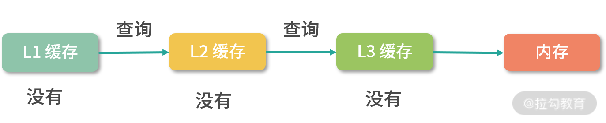

SSD、内存和 L1 Cache 相比速度差多少倍？
如果你不知道 L1 Cache，可能会错误地判断内存执行速度。我们写程序，会用寄存器、内存以及硬盘，所以按照墨菲定律，如果这里有一个认知是错误的，那么最终的结果就会产生问题。
下面，回到我们今天的问题，这个问题关联的知识点是存储器分级策略。接下来，请你带着问题开始学习今天的内容。
为什么会有存储器分级策略？
要想弄清楚存储器分级策略。
首先，你要弄清楚，“我们希望存储器是什么样子的”，也就是“我们的需求是什么”？
然后，你要弄清楚，我们的需求有哪些“实现约束”。
从需求上讲，我们希望存储器速度快、体积小、空间大、能耗低、散热好、断电数据不丢失。但在现实中，我们往往无法把所有需求都实现。
下面我们举几个例子，带你深入体会一下，比如：
- 如果一个存储器的体积小，那它存储空间就会受到制约。
- 如果一个存储器电子元件密度很大，那散热就会有问题。因为电子元件都会产生热能，所以电子元件非常集中的 CPU，就需要单独的风扇或者水冷帮助电子元件降温。
- 如果一个存储器离 CPU 较远，那么在传输过程中必然会有延迟，因此传输速度也会下降。
这里你可能会有疑问，因为在大多数人的认知里，光速是很快的，而信号又是以光速传输的。既然光速这么快，那信号的延迟应该很小才对。但事实并不是这样，比如时钟信号是 1GHz 的 CPU，1G 代表 10 个亿，因此时钟信号的一个周期是 1/10 亿秒。而光的速度是 3×10 的 8 次方米每秒，就是 3 亿米每秒。所以在一个周期内，光只能前进 30 厘米。
你看！虽然在宏观世界里光速非常快，但是到计算机世界里，光速并没有像我们认知中的那么快。所以即使元件离 CPU 的距离稍微远了一点，运行速度也会下降得非常明显。
你可能还会问，那干吗不把内存放到 CPU 里？
如果你这么做的话，除了整个电路散热和体积会出现问题，服务器也没有办法做定制内存了。也就是说 CPU 在出厂时就决定了它的内存大小，如果你想换更大的内存，就要换 CPU，而组装定制化是你非常重要的诉求，这肯定是不能接受的。
此外，在相同价格下，一个存储器的速度越快，那么它的能耗通常越高。能耗越高，发热量越大。
因此，我们上面提到的需求是不可能被全部满足的，除非将来哪天存储技术有颠覆性的突破。
存储器分级策略
既然我们不能用一块存储器来解决所有的需求，那就必须把需求分级。
一种可行的方案，就是根据数据的使用频率使用不同的存储器：高频使用的数据，读写越快越好，因此用最贵的材料，放到离 CPU 最近的位置；使用频率越低的数据，我们放到离 CPU 越远的位置，用越便宜的材料。

具体来说，通常我们把存储器分成这么几个级别：
- 寄存器；
- L1-Cache；
- L2-Cache；
- L3-Cahce；
- 内存；
- 硬盘/SSD。
寄存器（Register）
寄存器紧挨着 CPU 的控制单元和逻辑计算单元，它所使用的材料速度也是最快的。就像我们前面讲到的，存储器的速度越快、能耗越高、产热越大，而且花费也是最贵的，因此数量不能很多。
寄存器的数量通常在几十到几百之间，每个寄存器可以用来存储一定字节（byte）的数据。比如：
- 32 位 CPU 中大多数寄存器可以存储 4 个字节；
- 64 位 CPU 中大多数寄存器可以存储 8 个字节。
寄存机的访问速度非常快，一般要求在半个 CPU 时钟周期内完成读写。比如一条要在 4 个周期内完成的指令，除了读写寄存器，还需要解码指令、控制指令执行和计算。如果寄存器的速度太慢，那 4 个周期就可能无法完成这条指令了。
L1-Cache
L1- 缓存在 CPU 中，相比寄存器，虽然它的位置距离 CPU 核心更远，但造价更低。通常 L1-Cache 大小在几十 Kb 到几百 Kb 不等，读写速度在 2~4 个 CPU 时钟周期。
L2-Cache
L2- 缓存也在 CPU 中，位置比 L1- 缓存距离 CPU 核心更远。它的大小比 L1-Cache 更大，具体大小要看 CPU 型号，有 2M 的，也有更小或者更大的，速度在 10~20 个 CPU 周期。
L3-Cache
L3- 缓存同样在 CPU 中，位置比 L2- 缓存距离 CPU 核心更远。大小通常比 L2-Cache 更大，读写速度在 20~60 个 CPU 周期。L3 缓存大小也是看型号的，比如 i9 CPU 有 512KB L1 Cache；有 2MB L2 Cache； 有16MB L3 Cache。
内存
内存的主要材料是半导体硅，是插在主板上工作的。因为它的位置距离 CPU 有一段距离，所以需要用总线和 CPU 连接。因为内存有了独立的空间，所以体积更大，造价也比上面提到的存储器低得多。现在有的个人电脑上的内存是 16G，但有些服务器的内存可以到几个 T。内存速度大概在 200~300 个 CPU 周期之间。
SSD 和硬盘
SSD 也叫固态硬盘，结构和内存类似，但是它的优点在于断电后数据还在。内存、寄存器、缓存断电后数据就消失了。内存的读写速度比 SSD 大概快 10~1000 倍。以前还有一种物理读写的磁盘，我们也叫作硬盘，它的速度比内存慢 100W 倍左右。因为它的速度太慢，现在已经逐渐被 SSD 替代。

当 CPU 需要内存中某个数据的时候，如果寄存器中有这个数据，我们可以直接使用；如果寄存器中没有这个数据，我们就要先查询 L1 缓存；L1 中没有，再查询 L2 缓存；L2 中没有再查询 L3 缓存；L3 中没有，再去内存中拿。
缓存条目结构
上面我们介绍了存储器分级结构大概有哪些存储以及它们的特点，接下来还有一些缓存算法和数据结构的设计困难要和你讨论。比如 CPU 想访问一个内存地址，那么如何检查这个数据是否在 L1- 缓存中？换句话说，缓存中的数据结构和算法是怎样的？
无论是缓存，还是内存，它们都是一个线性存储器，也就是数据一个挨着一个的存储。如果我们把内存想象成一个只有 1 列的表格，那么缓存就是一个多列的表格，这个表格中的每一行叫作一个缓存条目。
方案 1
缓存本质上是一个 Key-Value 的存储，它的 Key 是内存地址，值是缓存时刻内存地址中的值。我们先思考一种简单的方案，一个缓存条目设计 2 列：
- 内存的地址；
- 缓存的值。
CPU 读取到一个内存地址，我们就增加一个条目。当我们要查询一个内存地址的数据在不在 L1- 缓存中的时候，可以遍历每个条目，看条目中的内存地址是否和查询的内存地址相同。如果相同，我们就取出条目中缓存的值。
这个方法需要遍历缓存中的每个条目，因此计算速度会非常慢，在最坏情况下，算法需要检查所有的条目，所以这不是一个可行的方案。
方案 2
其实很多优秀的方案，往往是从最笨的方案改造而来的。现在我们已经拥有了一个方案，但是这个方案无法快速确定一个内存地址缓存在哪一行。因此我们想要找到一个更好的方法，让我们看到一个内存地址，就能够快速知道它在哪一行。
这里，我们可以用一个数学的方法。比如有 1000 个内存地址，但只有 10 个缓存条目。内存地址的编号是 0、1、2、3，…，999，缓存条目的编号是 0~9。我们思考一个内存编号，比如 701，然后用数学方法把它映射到一个缓存条目，比如 701 整除 10，得到缓存条目 1。
用这种方法，我们每次拿到一个内存地址，都可以快速确定它的缓存条目；然后再比较缓存条目中的第一列内存地址和查询的内存地址是否相同，就可以确定内存地址有没有被缓存。
延伸一下，这里用到了一种类似哈希表的方法：地址 % 10，其实就构成了一个简单的哈希函数。
指令的预读
接下来我们讨论下指令预读的问题。
之前我们学过，CPU 顺序执行内存中的指令，CPU 执行指令的速度是非常快的，一般是 2~6 个 CPU 时钟周期；这节课，我们学习了存储器分级策略，发现内存的读写速度其实是非常慢的，大概有 200~300 个时钟周期。
不知道你发现没有？这也产生了一个非常麻烦的问题：CPU 其实是不能从内存中一条条读取指令再执行的，如果是这样做，那每执行一条指令就需要 200~300 个时钟周期了。
那么，这个问题如何处理呢？
这里我再多说一句，你在做业务开发 RPC 调用的时候，其实也会经常碰到这种情况，远程调用拖慢了整体执行效率，下面我们一起讨论这类问题的解决方案。
一个解决办法就是 CPU 把内存中的指令预读几十条或者上百条到读写速度较快的 L1- 缓存中，因为 L1- 缓存的读写速度只有 2~4 个时钟周期，是可以跟上 CPU 的执行速度的。
这里又产生了另一个问题：如果数据和指令都存储在 L1- 缓存中，如果数据缓存覆盖了指令缓存，就会产生非常严重的后果。因此，L1- 缓存通常会分成两个区域，一个是指令区，一个是数据区。
与此同时，又出现了一个问题，L1- 缓存分成了指令区和数据区，那么 L2/L3 需不需要这样分呢？其实，是不需要的。因为 L2 和 L3，不需要协助处理指令预读的问题。
缓存的命中率
接下来，还有一个重要的问题需要解决。就是 L1/L2/L3 加起来，缓存的命中率有多少？
所谓命中就是指在缓存中找到需要的数据。和命中相反的是穿透，也叫 miss，就是一次读取操作没有从缓存中找到对应的数据。
据统计，L1 缓存的命中率在 80% 左右，L1/L2/L3 加起来的命中率在 95% 左右。因此，CPU 缓存的设计还是相当合理的。只有 5% 的内存读取会穿透到内存，95% 都能读取到缓存。 这也是为什么程序语言逐渐取消了让程序员操作寄存器的语法，因为缓存保证了很高的命中率，多余的优化意义不大，而且很容易出错。
缓存置换问题
最后的一个问题，比如现在 L1- 缓存条目已经存满了，接下来 CPU 又读了内存，需要把一个新的条目存到 L1- 缓存中，既然有一个新的条目要进来，那就有一个旧的条目要出去。所以，这个时候我们就需要用一个算法去计算哪个条目应该被置换出去。这个问题叫作缓存置换问题。有关缓存置换问题，我会在 “21 | 进程的调度：进程调度都有哪些方法？”中和你讨论。
总结
这节课我们讲到了存储器分级策略，讨论了 L1/L2/L3 缓存的工作原理。本课时学习的内容，是所有缓存知识的源头。所有缓存系统的设计，都是存储资源的分级。我们在设计缓存的时候，除了要关心整体架构外，还需要注意细节，比如：
- 条目怎么设计？
- 算法怎么设计？
- 命中率怎么统计？
- 缓存怎么置换等？
现在我们来说一下课前提出的问题：SSD、内存和 L1 Cache 相比速度差多少倍？
还是老规矩，请你先自己思考这个问题的答案，写在留言区，然后再来看我接下来的分析。
【解析】 因为内存比 SSD 快 10~1000 倍，L1 Cache 比内存快 100 倍左右。因此 L1 Cache 比 SSD 快了 1000~100000 倍。所以你有没有发现 SSD 的潜力很大，好的 SSD 已经接近内存了，只不过造价还略高。
这个问题告诉我们，不同的存储器之间性能差距很大，构造存储器分级很有意义，分级的目的是要构造缓存体系。
课后习题
最后，我再给你留一道课后练习题，同样也是一道高频面试题目。
假设有一个二维数组，总共有 1M 个条目，如果我们要遍历这个二维数组，应该逐行遍历还是逐列遍历？
Tips: Please indicate the source and original author when reprinting or quoting this article.